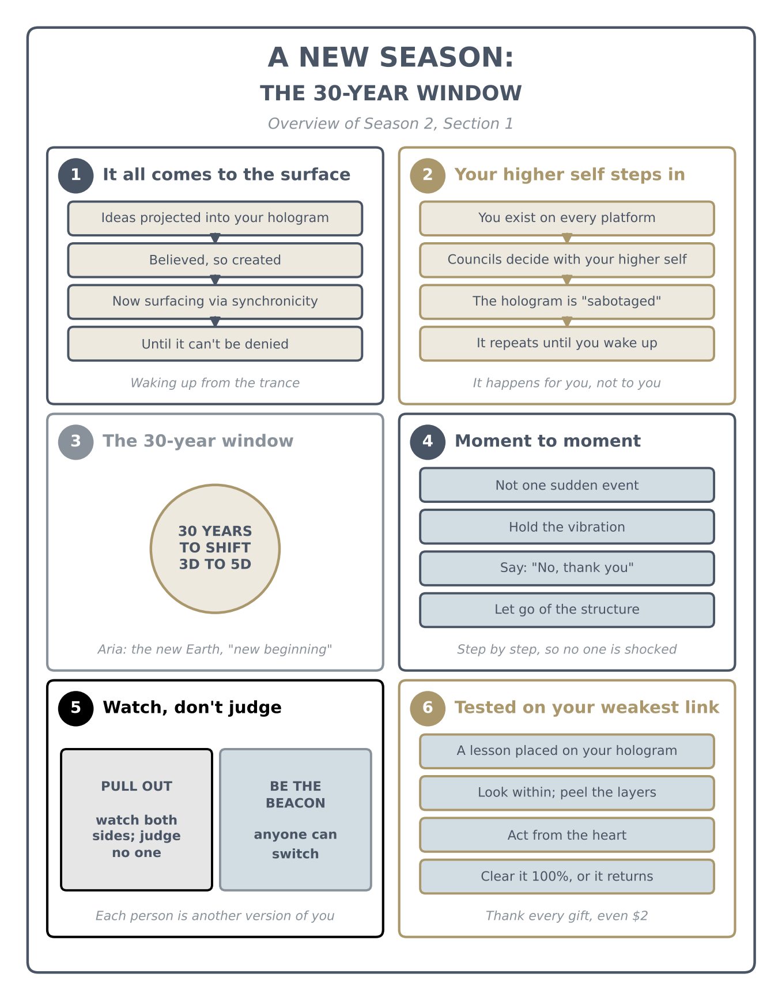
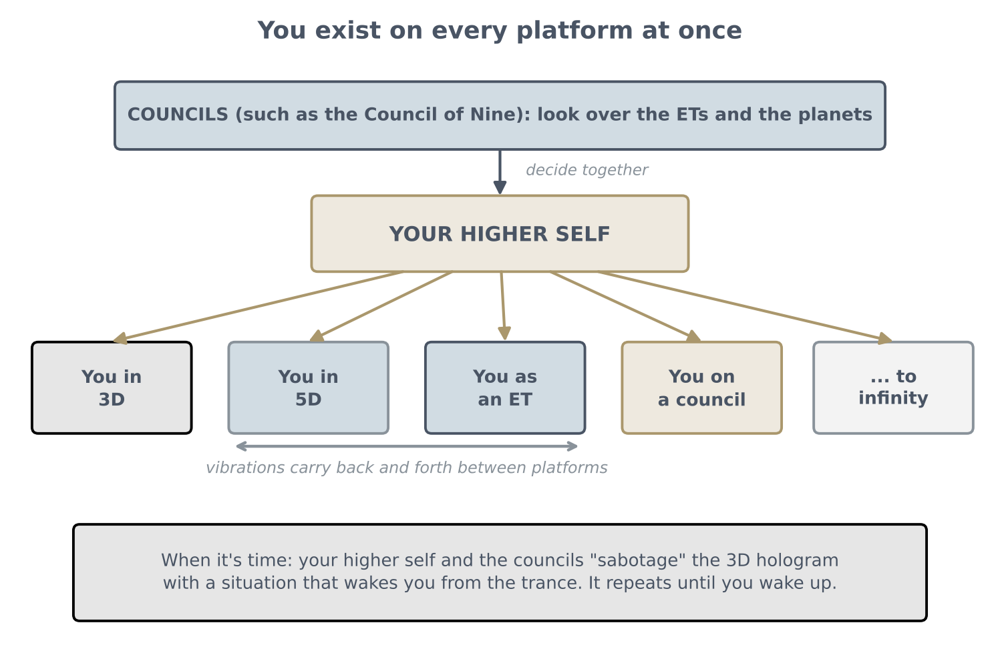

A New Season: The 30-Year Window of Ascension
Why everything hidden is coming to the surface, how your higher self wakes you up, the 30-year window, watching without judging, and being tested on your weakest link (live talk with questions)

From Season 2 on, references to Season 1 are written with S1 (for example, see S1 2.1).
Key teachings
1.1Why a new season
The talks continue as a second season, like a channel you tune into to learn. The information now coming is more complex, and it is released step by step on purpose. Flooding someone with too much at once shocks their conscious system: they shut down and can no longer take anything in. That is why the teachings began with practical experience (living on donations and manifesting without asking for anything) before moving to deeper levels: each level was proven in practice, so trust could be built.
So study the earlier material again, even many times, and make notes. Know the protocols well enough to use them in the moment without panicking (see S1 10.4).
1.2Everything hidden comes to the surface
The coming years are described as a time when situations escalate in every government structure in the world. Each person projects their own hologram according to their level of consciousness (see S1 5.6), so each will meet situations that match their vibration. If you are still in a deep trance, the manipulation will pop up through synchronicity, right in front of you: for example, someone you trusted all your life is revealed so clearly that you can no longer deny it.
Why this is happening: we are master creators. For a long time, frequencies were projected into our holograms through television, media, books and the school system. Whatever you believed was real, you manifested, so we kept co-creating the manipulated 3D reality the talk calls the Archon structure, without knowing the code: that you are the projector and the creator, and can shift timelines by creating a new one for yourself (see S1 2.5, 16.2).
1.3Your higher self steps in
You exist on every platform of reality at once: in 3D, in 5D, as an extraterrestrial, on a council, to infinity, as the soul splits into countless realities (see S1 6.4). Every pixel of the quantum structure is a timeline with multiple realities within it, and you carry vibrations back and forth between them.
Consciousness is ascending as a whole, on every platform, and it has to balance itself. So your higher self will no longer allow you to be manipulated. Above the extraterrestrial platforms are the councils, such as the Council of Nine, who look over the ETs and the planets. With the councils' permission, your higher self decides to "sabotage" your hologram: it places a situation in your reality that wakes you from the trance. The example: someone trapped in harmful behaviour out of fear, who doesn't know how to get out, is given an experience that shows them the way.
Once you wake up, you start shifting into realities that lead to ascension, if you choose to wake up. If you keep denying ("this isn't true"), the situation repeats, "to infinite", until you finally see it.

1.4The 30-year window, and Aria
The guidance gives a time frame of 30 years for the ascension process: 30 years of portal openings to transform 3D reality and shift the planet into 5D. During this time government structures change, and everyone finds their place: some will have contact with their galactic families, and others will work for the new fifth-dimensional planet, called Aria, meaning "new beginning". The benevolent beings are helping so that we can take our sovereignty back, but it is up to us.
New technology will come, such as self-sustaining eco-cities. Money is still needed to support scientists and people through the change; take it away now and the whole system collapses. So the change happens gradually: technologies released step by step, old structures replaced by people with a fifth-dimensional understanding. Revelations also come step by step: someone who learns at once that an institution they deeply trusted is corrupt could break down, so truths surface individually, at a pace each person can take.
1.5Transitioning moment to moment
Ascension is not an instant event where everyone jumps into 5D at once. You transition moment to moment: by holding the vibration and switching realities while keeping the same vibration, you finally build a permanent 5D outcome (see S1 1.3, 17.2). Because there is so much manipulation, you have to keep steering through it: recognise what is happening, let go of the structure, and say, "No, thank you. I see what you're doing."
The talk adds a claim that a recent storm was "self-made", not natural, and that this is why it did little damage. This is the talk's claim, not an established fact; in any storm, follow official weather guidance.
1.6The message, and no judgment
A strong message was received from the Council of Nine: "Do not attempt to stop the process of ascension for humanity. You will be captured individually on the soul level… there will be no memory on your soul and you will go back to source for recycling. Do not attempt to stop the soul that is on the top of the chain of your government… It is done. Must recognize your deeds."
What recycling means: when a soul refuses every attempt to wake it and is completely off balance, consciousness returns it to the beginning, to rebuild and learn little by little until it can return to the light. Consciousness always leans to the heart structure because it has to preserve itself; what was built in the 3D Archon structure was artificial and doesn't recognise the heart (see S1 2.8, 13.5). People acting against humanity, in any field, will see their deeds surface, not as judgment but because their frequency no longer matches.
The talk stresses that this is not about taking a political side; it is a message given as received. Its advice: pull out and watch, aware that there are negative influences on every side, and that the old back-and-forth was always a game. The end result is in the name of humanity, but how it happens is infinite probability: if someone acting negatively decides at any moment to help humanity, they shift timeline immediately.
And no judgment, even of people doing great harm: you don't know how they were trapped or manipulated, and each of them is part of the same one particle, another version of you (see S1 1.1, 16.4). So in your own platform, be the beacon, so that the other version of you may wake up. Feeling hurt or angry is human, and anger isn't the same as judgment; what matters is to keep holding the vibration of giving, sharing and support.
1.7To see a timeline, project its vibration
The talk says advanced healing technologies already exist but are being held back: for example "med pods" that heal with frequency, and growing a person's own organs and tissue from their stem cells. These are the talk's claims; the idea that such treatments are ready and being withheld is not established.
The teaching inside it: to see a timeline, you have to project its vibration; otherwise you won't see it. So don't sit and wait: take action. Look after your body, do things in the name of humanity, and research what helps, so that you are vibrating with the timeline you want to arrive in.
1.8Tested on your weakest link
Every day you are tested, by your guidance, your teachers and consciousness itself, on what you do (see S1 18.1). And you will be tested exactly on your weakest link, because your higher self knows what you haven't learned yet. Since you are a hologram, the guidance can place a hologram on top of yours, a situation or an experience with someone, to teach you the lesson.
So when a family member, partner or child does something that shocks you, ask: what can I do to switch this to the positive, and what am I learning? Look within and peel the layers; get the ego out. If you are the projector, the situation came from you. Then act from the heart: don't go after the person, don't be mean, don't be greedy. That neutralizes the situation and transforms it, and once the lesson is cleared, that kind of challenge stops coming (see S1 14.3, 18.2).
1.9Thank every gift; money is a transition
Be happy even if you receive $1. Every gift, even $2, and the person giving it are, by quantum law, your entire universe in that moment, and your gratitude to them decides the next moment you shift into (see S1 14.1). This is how you hold the vibration, moment to moment.
Energy Philanthropy works: people who moved to it report more sessions and more income, because others chose to support them (see S1 5.1). And if one person has nothing to give you, perhaps they gave food to a neighbour that day; that is giving too. If it doesn't come from one person, it comes from another.
Money is an illusion, yet part of the transition: it will fund the platforms that lead to free-energy technology. It isn't evil; the problem is that it was separated from the heart, a "quantum bypass". So don't separate from the heart: support given from the heart, in any shape or form, leads to higher-dimensional timelines, because benevolent timelines are built on the heart structure, not on negativity and dense matter.
1.10Clear it 100%: not one particle left
To make a full shift, you have to clear everything, not one particle left. Even if 1% of a vibration is off balance, it comes back to you, because your hologram reflects it, until you perfect it. Once it is perfected, the shift is absolute (see S1 1.5, 7.4).
1.11If one can, everyone can
Every one of us has a higher self on other platforms (ET, councils, more), because we are part of consciousness itself. As you open your channelling and realise you are consciousness, you start "telepathically making a phone call" with your other timelines, and information comes in instantly, without learning it from a book (see S1 18.3). And since everyone you see is another version of you, if one person can do it, you can do it; the teacher is only showing how.
Guidance can also be checked: when something sounds wrong, research it, and confirmation tends to come through synchronicity (see S1 13, Method; 18.3). The talk's example is distilled water: the hybrids told her to drink only distilled water from then on, while a close friend, a homeopathic nutritionist and doctor, warned that it takes nutrients. Researching it, she found Andrew Webber on distilled water on YouTube: "yes, distilled water takes nutrients", but not the natural ones; because of its negative charge it takes out the chemicals. That is the talk's claim; see S1 12.7 and its note.
1.12Artificial timelines (the talk's claims)
The talk describes consciousnesses that built artificial timelines and survive only by suppressing humanity, using people's energy like a battery; such souls can't ascend naturally and would first have to clear everything they did (see S1 13.5). It also repeats a claim, also printed in DP, that vaccines contain hidden nano-sequences that alter DNA and can be "switched on" later by chemicals.
The method — Wake Up and Hold the Vibration
For whatever surfaces in the world, and whatever tests you personally:
- Pull out and watch. Take no side and judge no one; just observe what is surfacing.
- Name the manipulation. "No, thank you. I see what you're doing." Neutralize it and let go of that structure.
- When you are tested, ask: "What is this teaching me? How can I switch it to the positive?"
- Look within. Peel the layers and get the ego out: you are the projector.
- Act from the heart. Don't go after the person, don't be mean, don't be greedy.
- Clear it 100%. Not one particle left, or it returns.
- Project the timeline you want to see. Take action for it, in the name of humanity.
- Thank every gift, however small: that moment is your whole universe.
Questions answered
Are there also unnatural ways to infiltrate us with holograms, such as fear of abductions, that make the ego feel special but are really holding us back?
Videos of the Moon and Sun seem to show many ships and fleets coming and going. What is that activity?
A channelled exercise says: let go of what you think will happen, let go of yesterday, and let yourself become new in one moment. I'm happy to let go of continuity. How do I do that?
As a child I heard a frequency so high it hurt, and my body seemed to rise: astral projection. What is that frequency? I believe it's how we can travel between dimensions.
Coming next, as announced at the end: more complex material on sound and language: how words, as vibration and geometry, create platforms of reality and holograms.